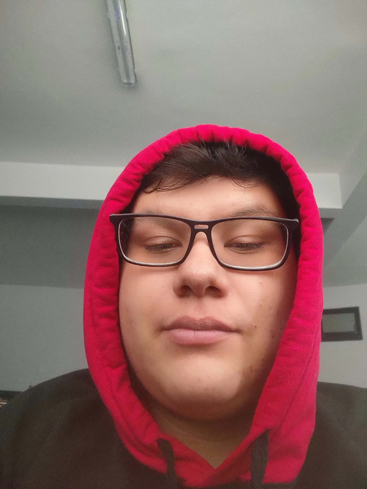

- Nombre: Jonathan Zavala Acosta
- Edad: 18 años
- Ubicación: Ciudad de México
- Carrera: Estudiante de desarrollo de software interactivo y videojuegos en Amerike
- Estudios anteriores: Cursé en el cetis 11 como diseñador grafico
Educación:
- Estudios en desarrollo de software interactivo y videojuegos en Amerike (en curso)
- Estudie como diseñador grafico en el Cetis11